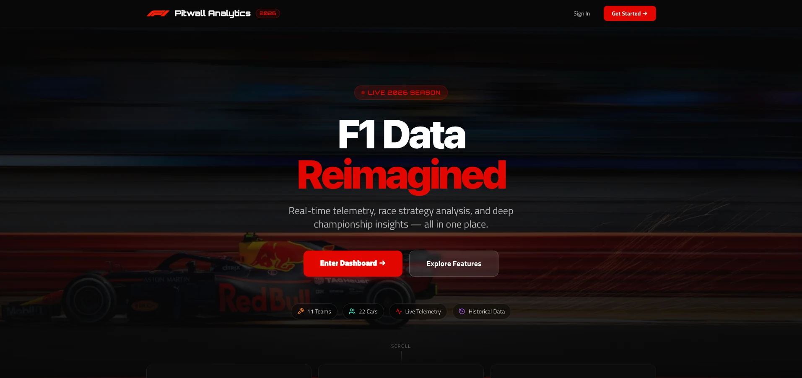

01 / THE FLAGSHIPLIVE + IMPROVING
F1
F1 Pitwall
Analytics.
Every race tells a story.
I built a place to explore the data.
Live dashboards, race telemetry, personalized watchlists, and real-time polling in one full-stack Formula 1 platform.
● ● ●pitwall-analytics.vercel.app

RACE TELEMETRY LIVE DASHBOARDS FULL-STACK